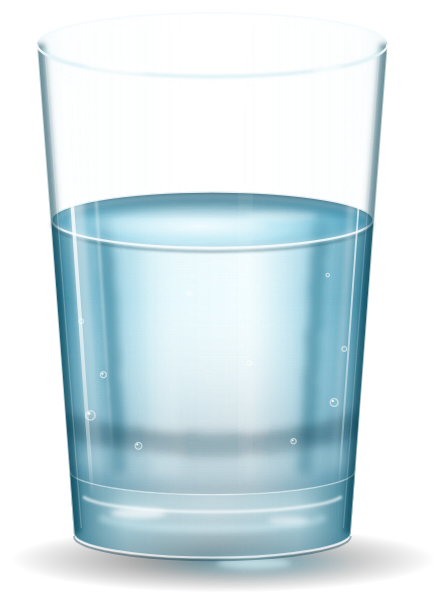
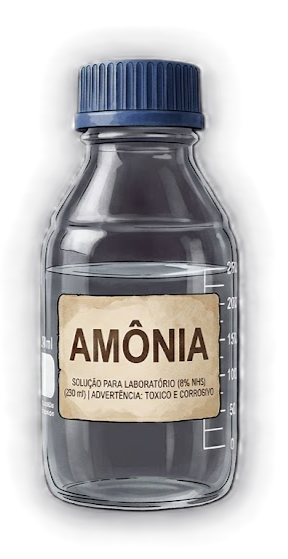
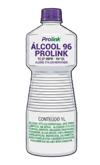

Moléculas
Um audiobook interativo sobre ligações químicas: ouça, observe e aprenda a montar moléculas passo a passo.
 Designed byAmauri Junior
Designed byAmauri Junior
Um audiobook interativo sobre ligações químicas: ouça, observe e aprenda a montar moléculas passo a passo.
Designed byAmauri Junior
Observe a substância a seguir. A fórmula química dessa substância é:



Agora observe as fórmulas químicas em cada exemplo e marque a estrutura correspondente.
Você leu todas as moléculas e todas as fórmulas.